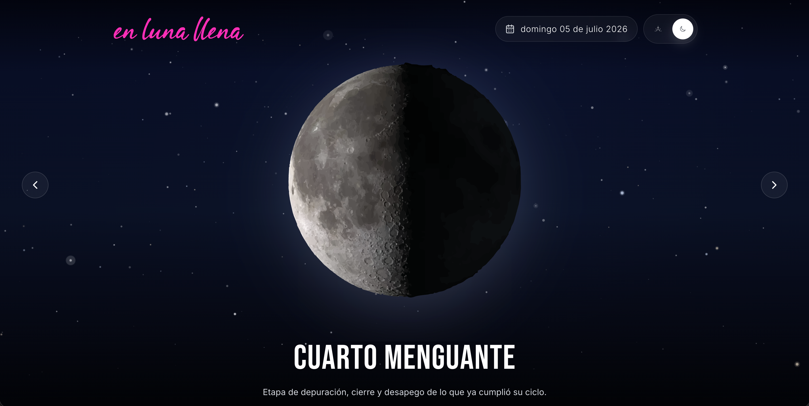
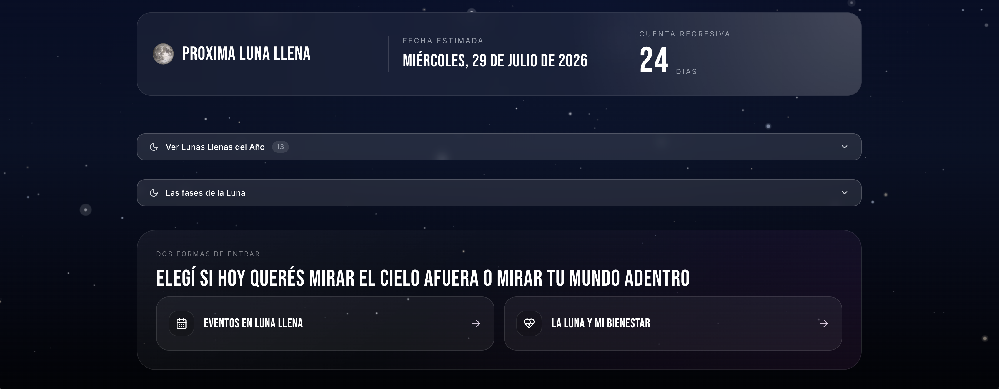

Proyecto de Exploración
Una experiencia lunar para consultar fases, descubrir eventos bajo la luna llena y recibir lecturas de bienestar con una mirada intuitiva, simbólica y editorial.
En Luna Llena nace de la necesidad de crear un espacio digital que conecte a las personas con los ciclos lunares de una forma cercana, mágica y ritual. No es solo una app de calendario astronómico, es una experiencia de bienestar que invita a la introspección y la conexión con los ritmos naturales.
El desafío fue traducir la atmósfera contemplativa y ceremonial de la observación lunar a una interfaz digital que se sintiera íntima, cálida y respetuosa con la práctica del usuario.
La decisión de arquitectura de información clave: desde el inicio, la persona elige si hoy quiere "mirar el cielo afuera" (fase lunar actual, cuenta regresiva a la próxima luna llena y calendario de las 13 lunas del año) o "mirar su mundo adentro" (eventos y lecturas de bienestar). Esa bifurcación ordena toda la navegación sin forzar un único recorrido.
Fase lunar del día con su significado, cuenta regresiva a la próxima luna llena y calendario navegable de las 13 lunas del año.
Agenda de eventos especiales, círculos de luna llena y rituales comunitarios en Argentina, con detalles de ubicación y modalidad.
Devoluciones personalizadas según la fase lunar actual, con sugerencias de prácticas, reflexiones y mensajes intuitivos.
Entrevistas con personas interesadas en astrología, rituales lunares y bienestar holístico. Identificación de necesidades: información confiable, comunidad, guía práctica para conectar con los ciclos.
Construcción de una identidad visual que equilibrara misticismo y claridad. Paleta de colores nocturnos con acentos violetas suaves, tipografía editorial, ilustraciones delicadas.
Diseño de flujos intuitivos para explorar fases, descubrir eventos y recibir lecturas. Priorización de la experiencia contemplativa: animaciones suaves, espacios generosos, lectura pausada.
Tests con usuarios del público objetivo. Ajustes en lenguaje, jerarquía visual y frecuencia de notificaciones para respetar el ritmo personal de cada usuario.


"Un espacio donde lo digital se encuentra con lo ritual, creando una experiencia de conexión íntima con los ciclos de la naturaleza."
Reflexión de DiseñoEste proyecto me permitió explorar el diseño centrado en la experiencia emocional y simbólica. Aprendí a equilibrar información funcional (datos astronómicos precisos) con contenido inspiracional (mensajes de bienestar), manteniendo claridad y belleza en cada pantalla.
El mayor desafío fue diseñar una interfaz que invitara a la calma en un mundo digital que suele demandar velocidad y eficiencia. La tipografía editorial, los espacios en blanco generosos y las transiciones suaves fueron clave para lograr esa atmósfera contemplativa.